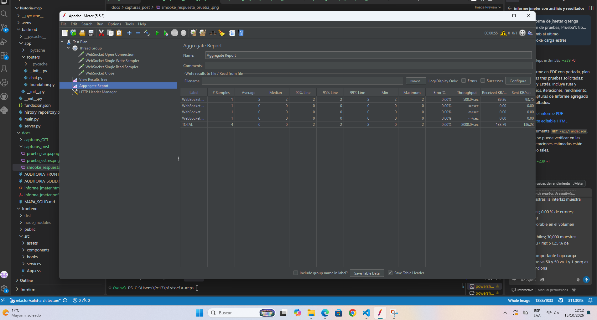
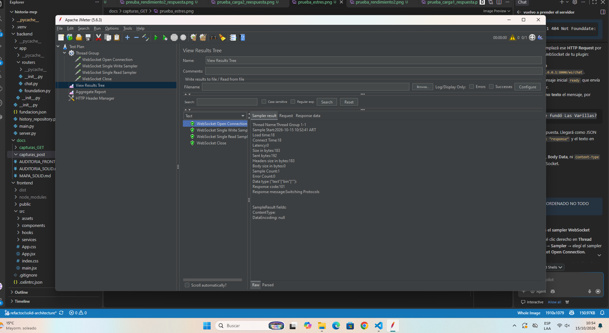
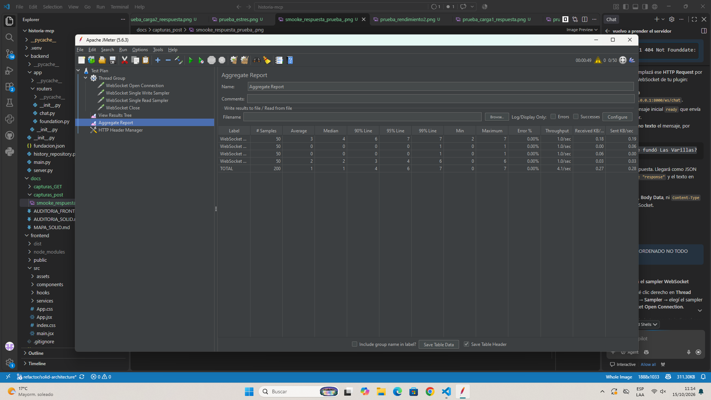

Este informe presenta las pruebas JMeter guardadas en docs/capturas_post. La evidencia corresponde a la comunicación WebSocket del chat —conexión, escritura, lectura y cierre— en la ruta /ws/chat. Aunque la carpeta se denomina “capturas_post”, estas métricas no son de una solicitud HTTP POST.
| Tipo | Configuración visible | Resultado agregado | Lectura |
|---|---|---|---|
| Smoke | 1 usuario; ramp-up 1 s; 1 iteración; 4 samplers | 4 muestras; p95 2 ms; 0.00 % errores | Secuencia básica completada |
| Carga | 50 usuarios; 4 samplers por usuario; ramp-up/iteraciones no visibles | 200 muestras; promedio 1 ms; p95 6 ms; 0.00 % errores | Sin errores en la ejecución observada |
| Estrés | 500 usuarios; 4 samplers; 20,000 muestras | Promedio 792 ms; p95 5,947 ms; 72.32 % errores | Degradación severa bajo alta concurrencia |
Verificar el establecimiento y ciclo básico del WebSocket y observar latencia y errores cuando aumenta la concurrencia.
| Sistema bajo prueba | Servicio de chat del proyecto MPC Club de Ciencia |
|---|---|
| Ruta | ws://127.0.0.1:8000/ws/chat (la captura de JMeter muestra el host local y el puerto 8000) |
| Protocolo | WebSocket; el establecimiento se identifica con respuesta HTTP 101 Switching Protocols |
| Secuencia de samplers | WebSocket Open Connection, Single Write, Single Read y Close |
| Herramienta | Apache JMeter 5.6.3 |
| Listeners | Aggregate Report y View Results Tree |
Fuente de resultados y capturas: docs/capturas_post. El árbol de resultados disponible es de smoke; las capturas de carga y estrés suministradas son de Aggregate Report.
| Tipo | Smoke |
|---|---|
| Ruta | ws://127.0.0.1:8000/ws/chat |
| Método / protocolo | WebSocket (upgrade inicial HTTP 101) |
| Usuarios | 1 hilo |
| Ramp-up | 1 segundo |
| Iteraciones | 1; flujo de 4 samplers |
| Rendimiento | 4 muestras en total; promedio total 0 ms; máximo y p95 2 ms en el agregado. La apertura de conexión registra promedio 2 ms. |
| Resultado | 0 errores; la respuesta del sampler de apertura indica 101 Switching Protocols. |
El smoke ejecuta una sola secuencia de conexión, escritura, lectura y cierre. El listener agregado registra una muestra por sampler. La vista de resultados muestra que el upgrade WebSocket fue aceptado (101) y que el sampler seleccionado terminó sin error.


| Tipo | Carga |
|---|---|
| Ruta | ws://127.0.0.1:8000/ws/chat |
| Método / protocolo | WebSocket: abrir, escribir, leer y cerrar |
| Usuarios | 50 hilos (indicador de JMeter) |
| Ramp-up | No legible en la captura agregada disponible |
| Iteraciones | 50 muestras por sampler; cuatro samplers; 200 muestras totales. El loop count del Thread Group no es legible. |
| Rendimiento total | Promedio 1 ms; mediana 1 ms; p90 4 ms; p95 6 ms; p99 7 ms; mínimo 0 ms; máximo 7 ms; throughput 4.1 muestras/s |
| Resultado | 200 muestras agregadas; 0.00 % de errores |
En la ejecución observada, los cuatro samplers registran 50 muestras cada uno y no aparecen errores. Los tiempos agregados son bajos en esta corrida; la duración sostenida y el ramp-up no quedan establecidos por la evidencia disponible.

| Tipo | Estrés |
|---|---|
| Ruta | ws://127.0.0.1:8000/ws/chat |
| Método / protocolo | WebSocket: abrir, escribir, leer y cerrar |
| Usuarios | 500 hilos (indicador visible en JMeter) |
| Ramp-up | No legible en la captura agregada disponible |
| Iteraciones | 5,000 muestras por sampler; cuatro samplers; 20,000 muestras totales. Equivale a 10 flujos por hilo solo si cada flujo ejecuta los cuatro samplers una vez. |
| Rendimiento total | Promedio 792 ms; mediana 0 ms; p90 2,034 ms; p95 5,947 ms; p99 7,515 ms; mínimo 0 ms; máximo 8,054 ms. Throughput agregado mostrado: 0/hora. |
| Resultado | 20,000 muestras agregadas; 72.32 % de errores. |
La ejecución de estrés presenta un 72.32 % de errores y tiempos elevados en los percentiles superiores. La mediana total de 0 ms y el throughput total mostrado como 0/hora, junto con la tasa de errores, requieren revisar los resultados por sampler y el log de JMeter antes de extraer conclusiones sobre solicitudes completadas correctamente.
Con 1 hilo, 1 segundo de ramp-up y 1 iteración, el ciclo WebSocket básico se completó sin errores. La respuesta 101 confirma el establecimiento de la conexión; esta prueba verifica funcionamiento, no capacidad.
La corrida de 50 hilos registró 200 resultados de samplers y 0 % de errores. La latencia agregada fue baja en la muestra tomada. Al no verse el ramp-up ni la duración del grupo, no permite certificar comportamiento sostenido ni extrapolar a cargas mayores.
Con 500 hilos se registraron 20,000 muestras y 72.32 % de errores. Los percentiles p95 y p99 de 5,947 ms y 7,515 ms reflejan degradación significativa. El resultado sugiere que esta configuración excede la capacidad estable del entorno ensayado, pero las capturas por sí solas no determinan si el origen es el servidor, el cliente de prueba o una dependencia.
Nota de alcance: este documento refleja las capturas de WebSocket en docs/capturas_post. No representa pruebas del endpoint HTTP POST /api/chat.